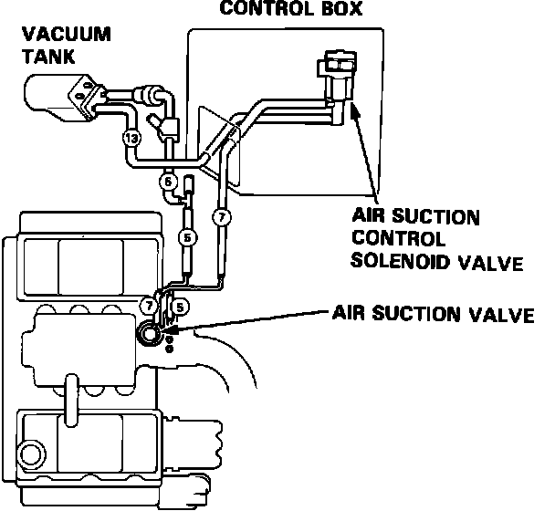
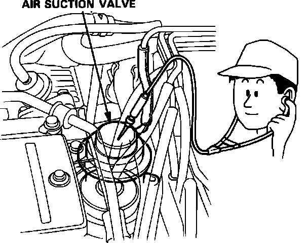
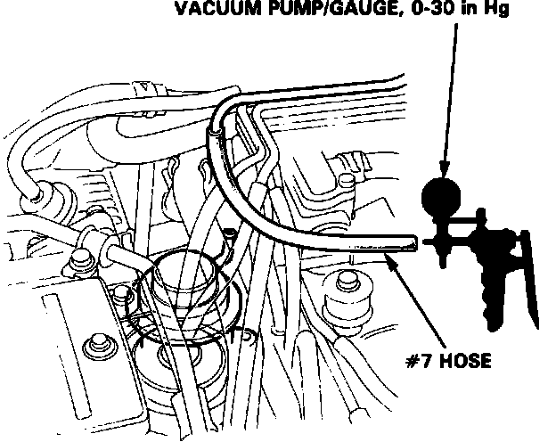

Air Injection System
Fig. 45a Air Injection System:

1. Check the vacuum lines for proper connections, cracks, blockage, or disconnected hose.
2. Start and warm up the engine (cooling fan comes on).
3. Stop the engine.
4. Restart the engine.
Fig. 46 Air Suction Valve Test Components:

Fig. 47 Air Suction Valve:

5. Within 10 seconds after restart, check for air suction noise (bubbling sound) from the air suction valve at idle.
6. If bubbling sound is not heard, disconnect #7 vacuum hose from the top of the air suction valve, attach a vacuum gauge, and check for vacuum within 10 seconds after restart.
Fig. 48 Air Suction Valve Vacuum Test:

7. There should be vacuum.
a. If there is vacuum, replace the air suction valve and retest.
b. If there is no vacuum, go to air suction control solenoid valve test 1. [SEE "COMPUTERIZED ENGINE CONTROLS"]
8. Stop the engine.
9. Check for air suction sound from the air suction valve at idle 15 seconds after start.
10. Bubbling sound should not be heard.
a. If bubbling sound is not heard, test is complete.
b. If bubbling sound is heard, go to air suction control solenoid valve test 2. [SEE "COMPUTERIZED ENGINE CONTROLS"]